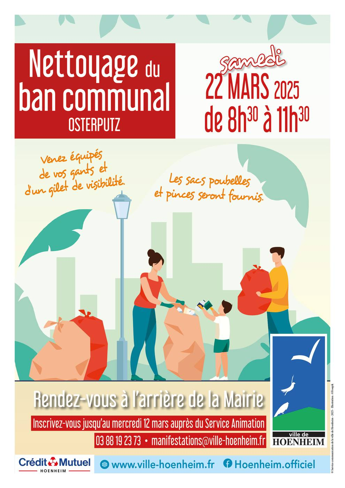

- Cet événement est terminé
Osterputz ! Nettoyage du ban communal
22 mars 2025 à 8 h 30 min - 11 h 30 min
Navigation de l'événement

Vous êtes conviés à l’opération Osterputz ! Cette action de citoyenneté et d’écologie organisée par la ville, à l’occasion du nettoyage du ban communal, aura lieu le samedi 22 mars 2025 de 8h30 à 11h30.
Rendez-vous samedi 22 mars 2025 à 8h30, à l’arrière de la Mairie – 28 rue de la République. Vous parcourrez par groupe les rues de la ville en toute convivialité.
Inscrivez-vous avant le mercredi 12 mars auprès du Service Animation au 03 88 19 23 73 ou à manifestations@ville-hoenheim.fr. Chacun est le bienvenu sans limite d’âge, les moins de 16 ans resteront sous la responsabilité d’un adulte. Venez équipés de vos gants et d’un gilet de visibilité.
Les sacs poubelles vous seront remis par la ville ainsi que des pinces de ramassage, avec la collaboration du Crédit Mutuel de Hoenheim.
L’objectif est de ramasser les déchets et détritus laissés par des citoyens indélicats. Ensemble, mobilisons-nous pour maintenir un cadre de vie agréable !